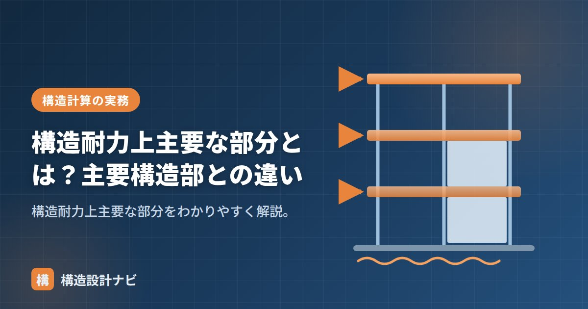

構造耐力上主要な部分とは？主要構造部との違い

構造耐力上主要な部分とは、建築物の重さや地震・風などの力を支える部材のことです。建築基準法施行令第1条第3号で定義されています。名前がよく似た「主要構造部」は防火の観点から法第2条第5号で定義される別の概念であり、混同しやすいので注意が必要です。構造設計・確認申請の実務では、両者を区別して理解しておくことが欠かせません。
- 構造耐力上主要な部分は力を支える部材のこと（施行令1条3号）
- 基礎・柱・梁・土台・斜材・床版・屋根版などが含まれる
- 主要構造部（法2条5号）は防火の概念で、対象範囲が異なる
構造耐力上主要な部分の種類
施行令1条3号では、次の部分のうち、自重・積載荷重・積雪・風圧・土圧・水圧・地震その他の震動や衝撃を支えるものと定義されています。
- 基礎・基礎ぐい
- 壁・柱・横架材（梁・けた）・土台
- 小屋組・床版・屋根版
- 斜材（筋かい・方づえ・火打材など）
ポイントは「力を支えるかどうか」で判断される点です。同じ壁でも、荷重を負担しない間仕切壁は構造耐力上主要な部分には含まれず、逆に力を負担していれば名称にかかわらず該当します。
なぜこの区分が必要か
建築基準法は、地震や台風などの外力に対して建物が倒壊・崩壊しないよう、構造計算や仕様の基準を定めています。その基準を適用する対象を明確にするために「構造耐力上主要な部分」という範囲が定義されており、構造計算のルート選択や、耐久性等関係規定の適用対象を判断する際の前提になります。防火に関する規制（主要構造部）とは目的が異なるため、別々の定義が設けられています。
主要構造部との違い
| 構造耐力上主要な部分 | 主要構造部 | |
|---|---|---|
| 根拠 | 施行令1条3号 | 法2条5号 |
| 観点 | 構造（力を支える） | 防火（火災時の安全） |
| 含むもの | 基礎・土台・斜材・床版なども含む | 壁・柱・床・はり・屋根・階段 |
| 除くもの | — | 構造上重要でない間仕切壁・最下階の床・庇など |
主要構造部は「防火」、構造耐力上主要な部分は「構造（耐力）」の概念です。基礎・土台・斜材は構造耐力上主要な部分には含まれますが、主要構造部には含まれません。逆に階段は主要構造部ですが、力を支える部材とは限りません。
名前が似ているため、確認申請書類や検査で「主要構造部」と「構造耐力上主要な部分」を取り違えるミスが少なくありません。基礎や土台の扱いを検討する際はとくに注意し、根拠条文（施行令1条3号か、法2条5号か）を意識して読み分けることが大切です。
Q1. 階段は構造耐力上主要な部分に含まれますか？
階段は主要構造部には含まれますが、構造耐力上主要な部分に該当するかどうかは、その階段が建物の荷重を支える構造部材として機能しているかで判断します。単なる仕上げの階段であれば該当しないこともあります。
Q2. 間仕切壁はどちらに含まれますか？
荷重を負担しない間仕切壁は、構造耐力上主要な部分には含まれません。一方、主要構造部の定義では「構造上重要でない間仕切壁」は除かれると整理されており、いずれの概念でも荷重や防火上の重要性で判断される点は共通しています。
「安全上等重要である部分」「構造強度」「仕様規定」をどうぞ。
確認申請の質疑対応をしていると、審査側から「主要構造部」と「構造耐力上主要な部分」を混同した指摘を受けることがあります。私は回答書で必ず根拠条文（施行令1条3号か法2条5号か）を明記し、どちらの話をしているのかをその都度はっきりさせるようにしています。
3つの用語の関係（図解）
それぞれに含まれるものの一覧
| 部位 | 構造耐力上主要な部分 | 主要構造部 |
|---|---|---|
| 基礎・基礎ぐい | ○ | × |
| 壁 | ○（耐力壁） | ○（間仕切壁は除外規定あり） |
| 柱 | ○ | ○（間柱は除く） |
| 小屋組 | ○ | × |
| 土台 | ○ | × |
| 斜材（筋かい・方杖・火打材） | ○ | × |
| 床版 | ○ | ○（最下階の床は除く） |
| 屋根版 | ○ | ○（ひさしは除く） |
| 横架材（はり・けた等） | ○ | ○（小ばりは除く） |
| 階段 | ×（原則） | ○（屋外階段は除外規定あり） |
この表で注目してほしいのは、「階段」が構造耐力上主要な部分に含まれないという点です。階段は人が歩く重要な部分ですが、建物全体の骨組み（自重・積載荷重・地震力を支える系統）とは切り離せる場合が多いためです。ただし、RC造の階段が耐力壁に直接取り付いていて建物の剛性に影響する場合など、実態として構造耐力を担っているなら設計上は当然考慮します。
この区分が実務でどう効くか
| 場面 | どちらの用語が効くか | 具体的な影響 |
|---|---|---|
| 構造計算の対象範囲 | 構造耐力上主要な部分 | この範囲の部材は許容応力度計算等が必要 |
| 大規模の修繕・模様替の判定 | 主要構造部 | 過半の修繕は確認申請が必要になる |
| 耐火建築物の要求 | 主要構造部 | 耐火構造・準耐火構造の適用範囲 |
| 10年間の瑕疵担保責任 | 構造耐力上主要な部分＋雨水浸入 | 住宅品質確保法で新築住宅に義務づけ |
| 既存不適格の判定 | 両方 | 改修内容によって適用条文が変わる |
新築住宅の売主・請負人には、引渡しから10年間の瑕疵担保責任が法律で義務づけられています（住宅の品質確保の促進等に関する法律）。その対象は「構造耐力上主要な部分」と「雨水の浸入を防止する部分」の2つです。
つまり、基礎にひび割れが生じて構造耐力に影響する場合や、土台が腐朽した場合は10年保証の対象になります。一方、内装のクロスの剥がれや設備機器の故障は対象外です。この線引きを決めているのが、まさにこの用語の定義なのです。
用語の定義を「試験のための暗記事項」と捉えると退屈ですが、実際には誰がどこまで責任を負うかという実務上の重い意味を持っています。
まとめ
- 構造耐力上主要な部分は、力を支える部材（施行令1条3号）。
- 基礎・柱・梁・土台・斜材・床版・屋根版などを含む。
- 主要構造部（法2条5号）は防火の概念で、対象が異なる。
- 名称が似ているため、根拠条文を意識して混同を避けることが大切。